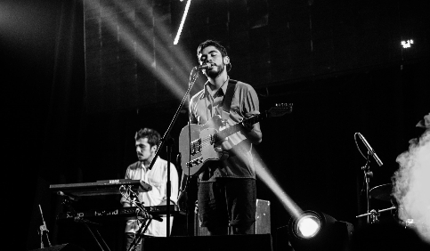
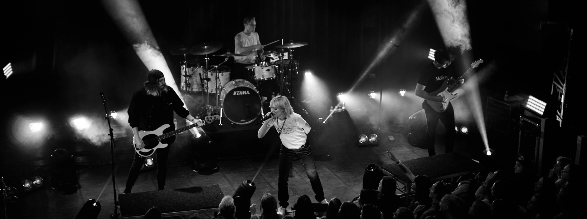
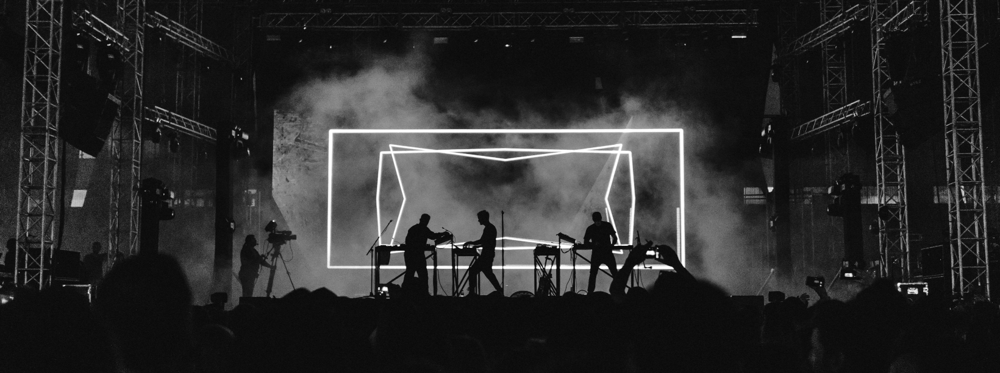

ამ სტატიაში განვიხილავთ აკაუსტიკური ბალადების შექმნის ხელოვნებას,როგორ ვაქციოთ მარტივი ფორტეპიანოს აკორდები ემოციურ ჰიტად.

ხავერდოვანი და ჩუმი ტონების გავლენა ადამიანის მენტალურ ჯანმრთელობასა და შინაგაან სიმშვიდეზე.
more